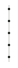

KALIUM
Better choices, companies, futures as an investment platform.
Kalium invests in early-stage founders and the funds that back them through dynamic equity: conventional terms, with one addition — an agreed cap on our return.
Surplus above the cap builds public goods through the company itself.
Dynamic equity turns enterprises into better engines for creating public goods.


